What two clipping systems do well, what Clipp is missing, and a plan for three streamer-specific agents that get better with every clip. Review only: nothing has been wired in.
Clipp already has the hard plumbing: live capture, a chat-and-loudness detector, ffmpeg render, code QA and a database-enforced review gate. What it lacks is what makes the two studied systems improve over time.
Both sources are day-one demos. Kenji's guide shows no proven revenue yet; Clipper Pro shows no viewer or earnings numbers. Treat both as method, not proof. unverified
Cost: Pro is $29 launch / $49 after, one-time, Mac and Windows, 1 year of updates (video 5:08).
docs/clipper-review/.| Capability | Free | Pro | Evidence |
|---|---|---|---|
| Finds moments by sound: laughing, shouting, cheering, plus loudness | yes | yes | read shared detect.py |
| Reads facecam motion and how fast the game changes | yes | yes | read seen 1:30 |
| Claude checks every candidate: transcript plus frames | yes | yes | read seen 1:35 |
| Stack layout, 3-word captions, hook card, loudness, score /100 | yes | yes | read |
| Clips a finished VOD or the saved part of a live Twitch stream | yes | yes | read |
| Live mode: records as it happens, own window, 0 Claude usage | no | yes | seen 3:40 |
| Live chat as a signal, hype meter, render ETA | no | yes | seen 3:50 |
| Skips starting-soon screens, ad breaks, map-staring | basic | yes | read seen 4:02 |
| Real viewer data: Twitch viewer clips, YouTube most replayed | no | yes | seen 4:13 |
| Streamer Brain: learns each streamer, thumbs up/down | stub | yes | seen 4:27 read |
| CLIP THAT: grab the last 40 seconds | no | yes | seen 4:45 |
| Price | $0 | $29 / $49 | seen 5:07 |
One detail from the free code: the learning hooks already exist (a logistic model over 12 features, a trust blend, a vote loader) but the vote loader returns an empty list. Pro fills it. read Pro's internals themselves were not seen. unverified
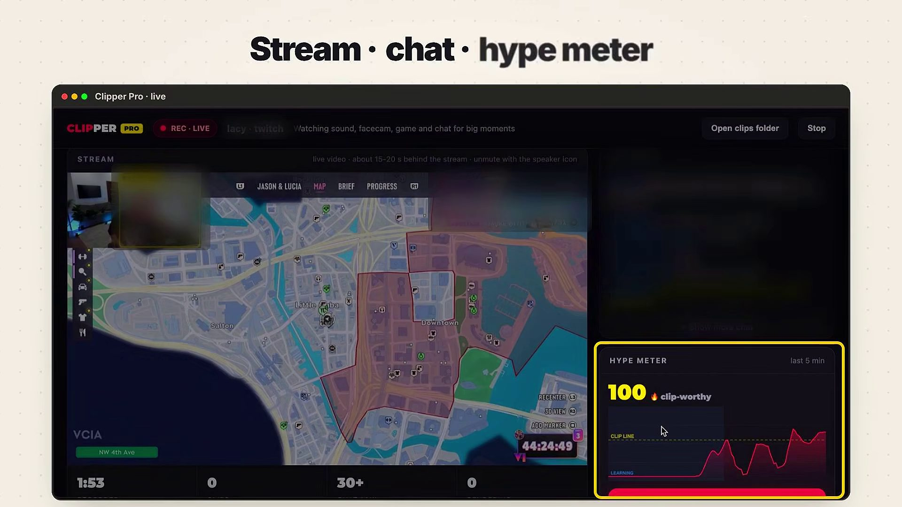
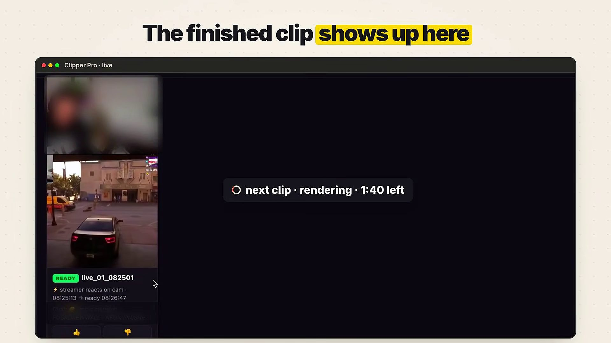
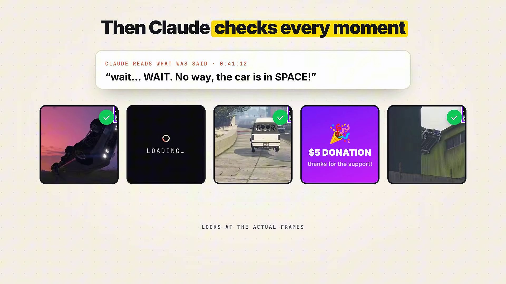
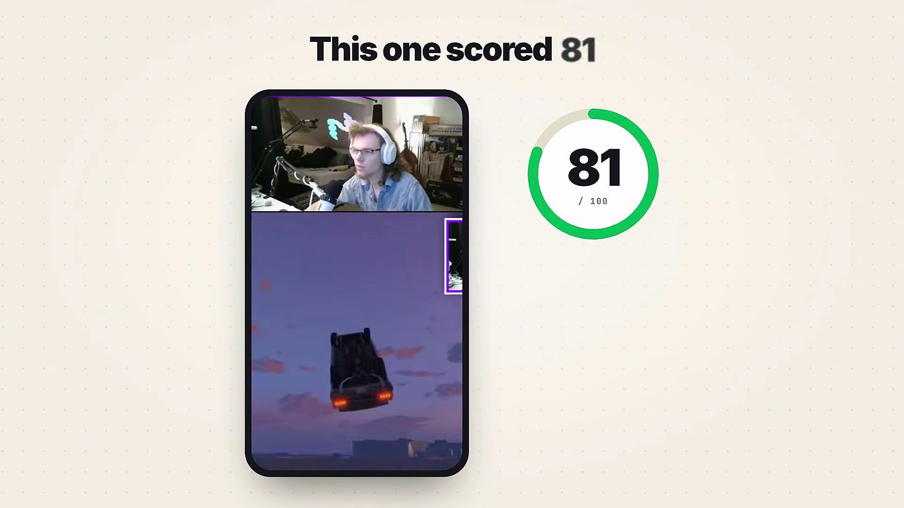
Sound events (laugh, shout, cheer, speech, music via a small audio tagger), loudness, facecam motion, game change rate, hard scene cuts, chat volume and mood (laugh, hype, shock) and the words this streamer's chat uses. Each is scored against that stream's own normal, capped, smoothed.
| Starting weights | Value |
|---|---|
| chat · laugh · loudness | 1.0 · 1.1 · 0.9 |
| chat laugh · hype · shock | 0.8 · 0.6 · 0.4 |
| facecam · scream · cheer | 0.5 · 0.6 · 0.4 |
| chat words · game · cut · bias | 0.5 · 0.25 · 0.15 · −4 |
Brain blend: final score = (1−α) × fixed mix + α × learned model, with α rising from 0.6 to 0.9 as it collects about 150 positive labels.
Gates: the first 30 s window with 8+ s of speech marks the real start (before it is a waiting screen). No speech, laugh or shout near a second multiplies its score by 0.3.
Clip edges: start 5–22 s before the peak, end 2.5–14 s after, snapped to sentence pauses; 12–50 s long.
| Measured (50) | Pts |
|---|---|
| Peak intensity vs this stream | 15 |
| Hook speed (action or hype word soon) | 15 |
| Length fit | 10 |
| Reaction and talk density | 10 |
| Judged, 0–10 each | Ask |
|---|---|
| hook | Stops a stranger in 1 s? |
| payoff | Clear climax or punchline? |
| standalone | Makes sense cold? |
| emotion | Shock, laugh, rage, hype? |
| share | Would someone send it? |
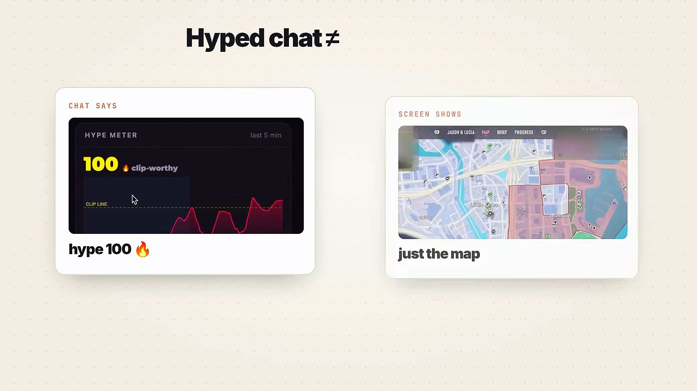
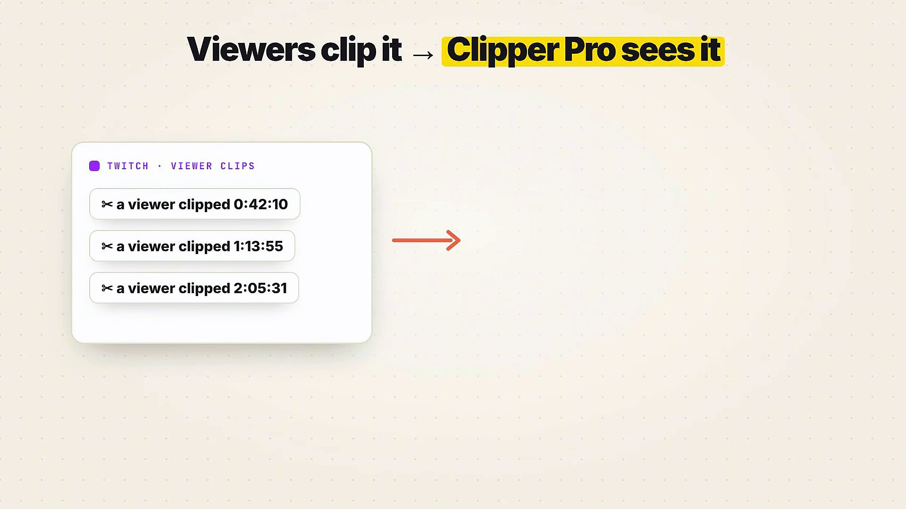
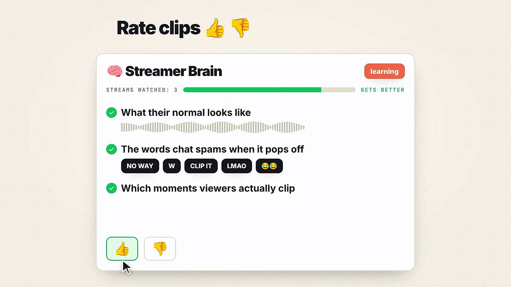
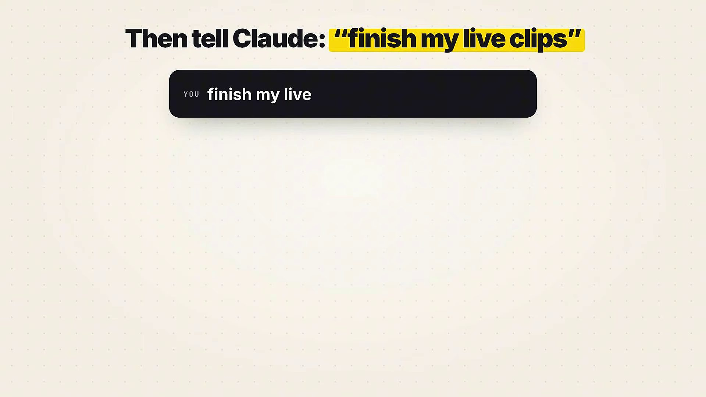
brain.json per streamer, isolated: weights, baseline, chat-word lift.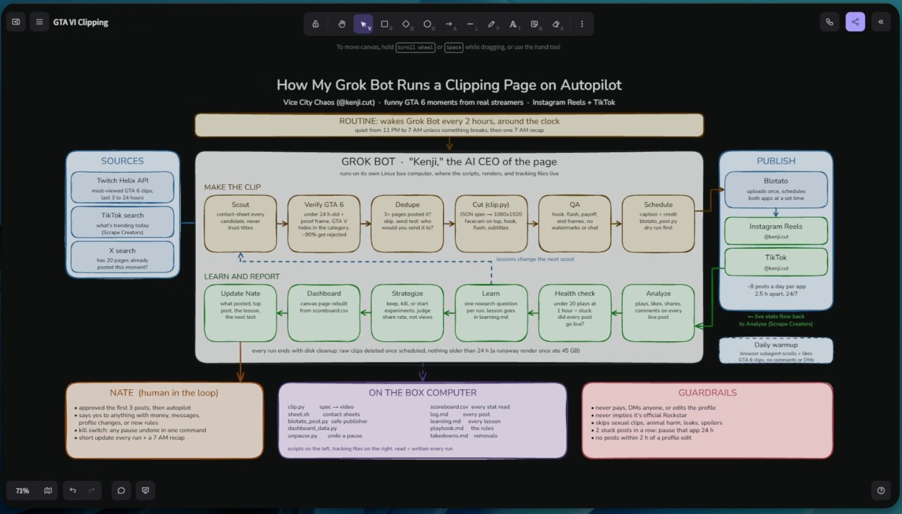
"You're the CEO of this business": owns outcomes, learns each cycle, proposes before touching money, messages, accounts or rules, reports bad news ("0 shares on all 12 posts"), pushes back (it offered a faster fix when a pause lasted a full day). Overnight stays quiet; one 7 AM recap. If nothing passes QA, it cuts nothing.
After about 12 hours: 6 posts live, 9 queued, about 30 followers, 2,300 views on Instagram and TikTok. Setup took about 2 hours by his count.
| Rule | Kenji | Clipp today |
|---|---|---|
| Hook text | Adds context, never describes. "STREAMER DOES X" banned. Keyword in frame 1. | Headline formula from Zo's 7 reference clips; keep, add the keyword rule |
| Teaser | 2–4 s of the funniest moment; let the action finish; tease the end, not the middle | None. Test as an A/B arm |
| Flash and whoosh | White flash + whoosh at teaser cut | SFX off by default (D052); opt-in only |
| Comedic edit | Slow-mo 0.35–0.5× or freeze on the funniest frame; once, twice max; no whole-frame zoom on stacks | Eased zoom, max 2 (D077); add one freeze option |
| Reaction | Hold on facecam, real laugh audible, no music over it | Add as end rule |
| Layout | Facecam top, gameplay below; credit on screen and in caption | Same stack; credit per campaign rules |
| Captions | Hand-timed, never guess a word; read in-game captions first | whisperX word timing; A/B headline vs word captions (D073) |
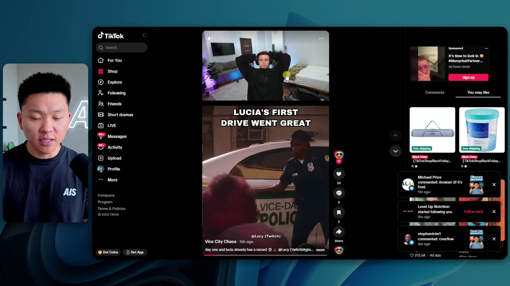
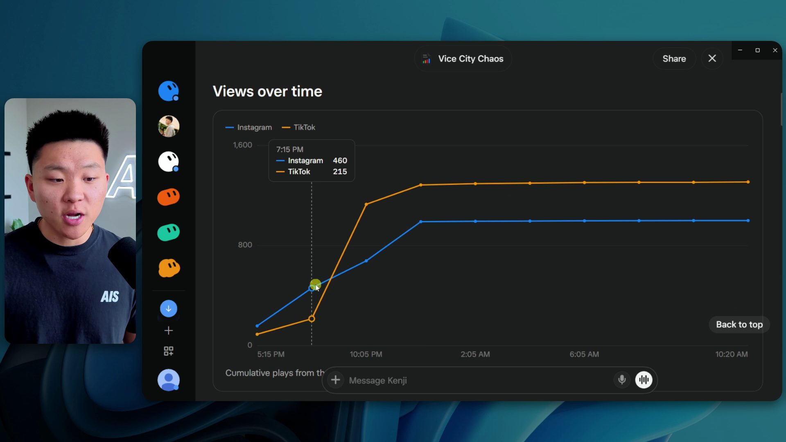
No verdict on a format under 24 h. Judge posting slots after 2 weeks, not 2 days.
IDs EXP-G# (own data) and EXP-R# (research). Write metric, sample size and kill condition first. Status: Leading, Promising, Running, Queued, Early miss, Killed. Example: character on screen and named = about 7× the others (873 TikTok plays).
Momentum rule: a post beating 3× the account median gets a same-streamer follow-up within 24 h.
scoreboard.csv (one row per post per platform, every read timestamped) · log.md (hook, caption, source URL, proof frame, send-test line, rejects with reasons) · learning.md · playbook.md · takedown log.
post_stats reads at 2 h, 24 h and 72 h.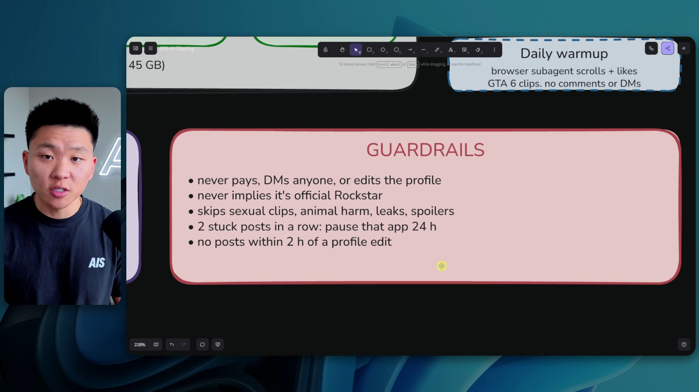
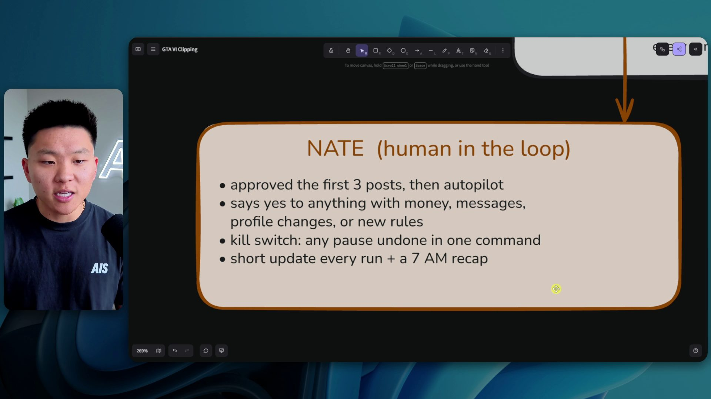
| Capability | Clipper Pro / Kenji | Clipp today verified in code | Action |
|---|---|---|---|
| Live watch and buffer | Own window, nonstop | Helix poll 60 s, 10 s segments, 10 min rolling buffer | Keep |
| Detector signals | Sound events, cam motion, game change, cuts, chat mood and words | Chat burst, unique chatters, reaction emotes, loudness only | Add the missing signals |
| Dead-air gate | Skips starting soon, ads, map-staring | Chat-rate floor 0.5 msg/s only | Add gate + frame rejects |
| Viewer clips | Badge or cut if missed | None | Helix Get Clips poller |
| Per-streamer learning | Brain with thumbs and viewer clips | Standing edit_rules (style asks) and candidate_log; no per-streamer weights | Add brain per streamer |
| CLIP THAT | Last 40 s on demand | Buffer exists; no trigger | Button + Discord command |
| Score | 0–100 with parts | score_10, hook type, keep/drop | 0–100 with reasons; keep score_10 |
| QA gates | Proof frame, freshness, dedupe, send test | Code QA: 9:16, loudness, size, duration, captions | Add the four Kenji gates |
| Analytics | Scoreboard at 2 h / 24 h / 72 h | Only tiktok_stats (manual) | post_stats for YouTube, X, TikTok |
| Experiments, stuck-post flags | EXP IDs, tripwires | None | Per-streamer files; flags only, no auto-delete |
| Approval gate | Autopilot after 3 posts | Postgres trigger: no post without human approval; 10/day cap | Keep. Stronger than both. |
| Disk hygiene | Nothing raw older than 24 h | Not confirmed for raw sources | Verify, then add cleanup unverified |
Last 30 days (to 2026-11-22), TwitchTracker stream lists and Kick's public videos endpoint. GTA 6 share is a title-keyword proxy; confirm with Twitch Helix before locking.
| Streamer | Days live /30 | Hours | Avg viewers | GTA 6 hours since 11-18 | Score /35 |
|---|---|---|---|---|---|
| Lacy | 21 | 210 | 13.7k | 107.5 (4 marathons) | 32 |
| xQc | 23 | 278 | 26.9k | 59.7 | 27 |
| Stable Ronaldo | 15 | 218 | 34.8k | 59.6 | 26 |
| Jynxzi | 31 | 229 | 29.0k | 31.1, shares time with Siege and chess | 25 |
| Kai Cenat | 11 | 226 | 39.3k | 74.6, only 13 streams | 21 |
| Adin Ross (Kick) | 27 | 102 | 28–51k VOD views | 4 days "PLAYING GTA 6" | 20 |
| IShowSpeed | 11 | 87 | 25.1k | 59.5 (main home is YouTube) | 17 |
Rubric, 1–5 each: activity · GTA 6 focus · volume · less saturated · capture reliability · crop box ready · brand safety. The qualitative columns are my judgment; every row is in streamer-shortlist.md.
Green = your trio (xQc scored 27 vs Jynxzi 25; your call). Days live: Jynxzi 31, Adin 27, xQc 23, Lacy 21, Stable 15, Kai 11, Speed 11. Hours alone mislead: Kai's 226 h came from 13 streams.
| Run mode | Trigger | Reads | Writes |
|---|---|---|---|
| Live | Streamer goes live | chat, audio, frames, brain.json | clip, candidate_log, log.md |
| After decision | Approve, revise, reject | the clip's score and reason | label, log.md, brain counts |
| Analytics | 2 h, 24 h, 72 h after a post | platform stats | scoreboard.csv, stuck-post flag |
| Weekly learn | Schedule or 25 new labels | scoreboard, labels, experiments | learning.md, brain.json version, proposals |
memory: project, writing only their own folder. Drafts are in agents/; nothing installed.| # | Upgrade | Impact | Effort |
|---|---|---|---|
| 1 | Dead-air gate + non-chat confirmation. Fewer false clips, less review time. | High | S |
| 2 | Labels table + per-streamer brain. Foundation for everything that "gets better". | High | M |
| 3 | Score 0–100 with reasons, send test, proof frame. Explainable ranking, fewer GTA V mix-ups. | High | S |
| 4 | Post stats at 2 h / 24 h / 72 h + share-rate scoreboard. Without it nothing can learn from results. | High | M |
| 5 | Viewer-clip poller. Free third-party vote on what mattered. | Med | S |
| 6 | CLIP THAT button. Catches what the detector missed, and trains it. | Med | S |
| 7 | Hook A/B: headline vs payoff-first teaser. One variable, data decides. | Med | M |
| 8 | Sound events + facecam motion + game-change signals. Better recall on non-verbal moments. | Med | M |
| 9 | Stuck-post tripwire (flag only). | Low | S |
Build order: shared foundations → Lacy end to end in dry-run → Jynxzi and Stable Ronaldo → analytics loop → dashboard polish. Every step sits behind a flag, off by default. Full list in wiring-plan.md.